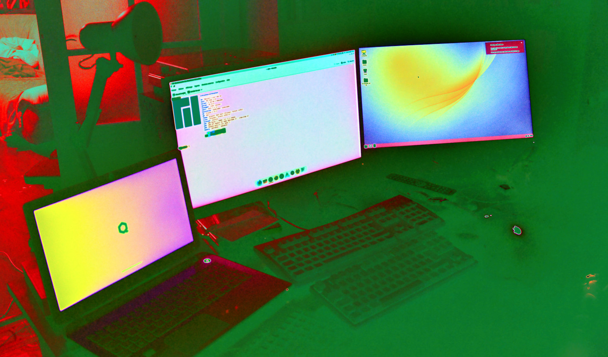
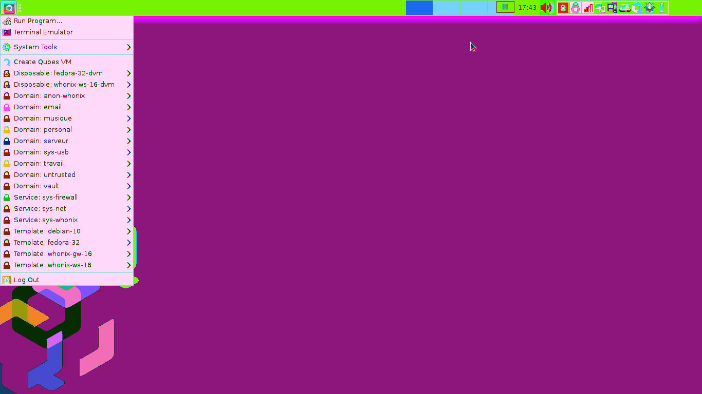

Liste d'articles
| Conquête de l'anonymat |
Je vous retrouve une semaine après le dernier article pour vous parler de ma
conquête de l'anonymat grâce à mon nouvel ordinateur portable qui fait tourner
QubesOS; alors, comme expliqué précédemment, QubesOS est une distribution de
Linux axée sur la sécurité par l'isolation via l'utilisation de multiples
machines virtuelles grâce à Xen, j'utilise donc à présent fréquemment Xen ainsi
que KVM/QEMU. Alors, mes ressentis vis-à-vis de QubesOS après cette semaine
d'utilisation sont très positifs, comme dans leur marchandisage, vous vous
sentez vraiment maître de votre système informatique lorsque vous
faites tourner Qubes. Protection aussi bien numérique que physique avec le
chiffrement qui semble fort recommandé lors de l'installation ainsi que de la
protection contre les BadUSB qu'offre sys-usb. Bon, faire les louanges de Qubes,
c'est bien beau mais concrètement à quoi ça me sert d'installer Qubes au lieu
d'installer Linux Mint ou bien Debian; parce que quitte à acheter un
ordinateur portable, pourquoi en acheter un à quatre cents euros qui peut faire
tourner Qubes comme un toupie se fait tourner elle-même au lieu d'acheter un
ordinateur à cent ou deux cents euros qui va bien faire tourner une
distribution normale de Linux ?
Et bien le premier avantage est tout simplement visuel, toutes vos applications
sont organisées et colorées par Qube; c'est également un avantage au niveau
sécurité car si une de vos applications a une faille de sécurité, votre
ordinateur complet n'est pas compromis. Le second avantage est de faciliter
l'utilisation de multiples identités sur le web, car vous choisissez quel Qube
partage son réseau avec quel autre Qube, vous pouvez avoir un VPN sur votre
Qube jaune, sys-whonix sur votre Qube rouge et aucun VPN sur votre Qube bleu.
Le dernier avantage mais qui, techniquement si vous êtes assez "tech-savvy"
n'est pas vraiment un avantage, est le fait d'avoir un Qube coffre-fort, qui est
complètement isolé et qui n'a pas accès à Internet, c'est pratique pour mettre
KeePassXC dessus ( un logiciel qui gère vos mots de passe ) ou juste pour
faire comme ce que j'ai fait et mettre votre calendrier que, bien évidemment,
vous voulez garder secret. Quoi ? C'est fait pour mettre des documents
importants ? Quels documents importants ? En effet, il semblerait que le but
premier est de mettre ses mots de passe ainsi que ses fichiers importants afin
qu'ils soient isolés d'Internet à perpétuité.
Malgré toutes ces machines virtuelles, l'équipe de QubesOS a implémenté un
système pratique qui vous permet de copier-coller de Qube en Qube.
Donc à présent mon bureau ressemble à ça :

Et voici l'écran de mon ordinateur portable avec ma machine pour mes e-mails,
ma machine personnelle et pour travailler équipée de GNU Icecat comme il se
doit pour respecter le saint Richard Matthew Stallman ( dieu merci, Fedora a
Icecat en paquet tout prêt tout chaud ) :

Et d'ailleurs, contrairement aux idées reçues que vous pourriez avoir après
avoir lu le "À propos" de QubesOS, vous n'avez pas besoin de débourser 800
euros pour pouvoir le faire tourner, j'ai acheté mon ordinateur à 450 euros, il
a seize gigas de ram, de la DDR4; il a également un i5 qui est relativement
correct ainsi qu'une carte graphique AMD Radeon qui est certes un peu ancienne
mais ce n'est pas comme si j'allais faire tourner Kingdom Come: Deliverance sur
ce PC. Malheureusement tout n'est pas rose, j'ai réussi à mettre à jour
correctement Debian 10 et Fedora 34 mais les deux versions de Whonix ( Gateway
et Workstation ) installées par défaut sur QubesOS étaient incapables de se
maintenir à jour... Après des multiples recherches sur qubes-issues, sur le
forum et sur le subreddit, j'ai découvert qu'il suffisait d'appliquer
l'ancienne tradition de "Si ça ne marche pas, réinstalle-le !"; et bim, ça
se met à jour sans aucun problème.
D'ailleurs, je risque de le faire plus longuement en expliquant clairement
chacun de mes problèmes avec les grosses entreprises du numérique mais je
vais quand même vite fait en parler ici; je hais, je déteste de plus en plus
les géants du numérique qui s'imposent de plus en plus en tant que maîtres
d'Internet, je vise en particulier Google ainsi que Youtube qui captivent une
bonne partie du trafic mondial sur Internet tout en bloquant les objets qui
pourraient permettre un semblant d'anonymat comme Tor. Ces géants qui font la
morale comme Bill Gates sur la chaîne de Mark Rober tout en espionnant un
pourcentage de la population mondiale à des fins personnelles, tous ces géants
aux grands pouvoirs qui peuvent influer sur des éléctions présidentielles comme
l'on a vu avec le scandale de Cambridge Analytica, entre autres.
Bref, je suis content de cette acquisition physique et virtuelle et je
continuerai à utiliser les produits que fournit l'équipe de QubesOS car je
trouve tout cela très intéressant.
|
{kind=link}
{kind=link}